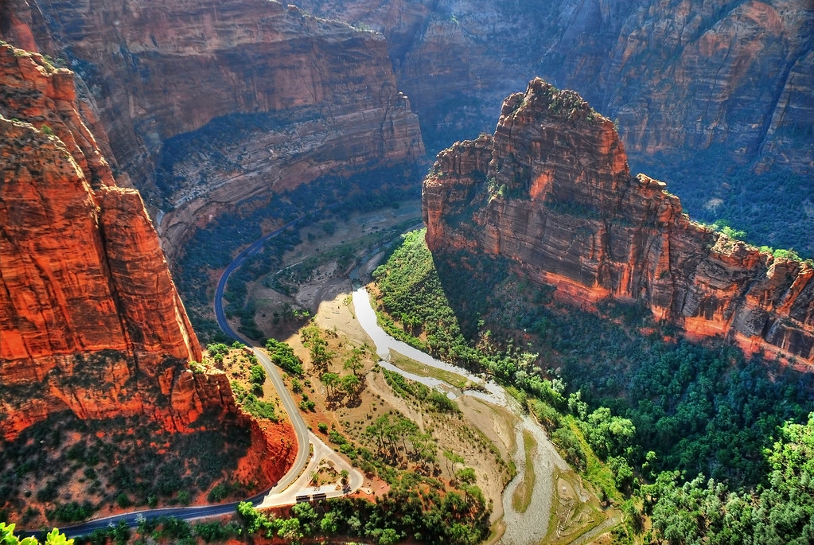

Zion National Park, Utah
Home
Favorite Movie
Favorite Cuisine
Favorite National Park
Resume
LinkedIn
Top Three Best Hikes in Zion:
Angels Landing
Scout Lookout
Watchman
AllTrails.com

Zion National Park Official Website